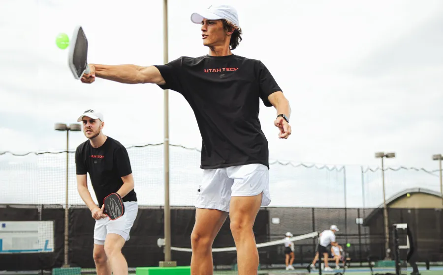

Hello, and welcome to Parker Pickleball. My name is Parker Hendrix and I am the founder and creator of Parker Pickleball.
- From: I was born and raised in Las Vegas, Nevada, and I have lived there almost my whole life. I spent two years living in Spain as a missionary for The Church of Jesus Christ of Latter-Day Saints.
- Now: I currently am attending Brigham Young University in Provo, Utah. I am studying information systems and hoping to get a masters in business.
